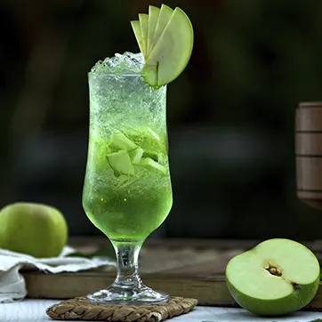

Ingredientes
50 ml de cachaça
1 maçã verde
2 colheres de chá de açúcar
Gelo a gosto
Modo de Preparo
Corte a maçã em cubos e coloque em um copo.
Adicione o açúcar e macere levemente.
Acrescente a cachaça e gelo.
Misture bem e sirva imediatamente.
⬅ Voltar